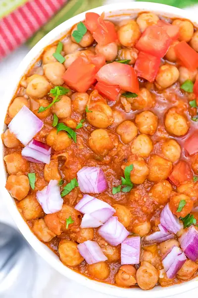

Trader Joe's Channa Masala Recipe

Ingredients
- 1 box Trader Joe's Frozen Channa Masala
- 15 oz canned chickpeas (1 can)
- ½ cup water (more or less depending on how thick you like your channa masala)
- ¼ red onion (diced)
- 1-2 tomatoes (diced)
- cilantro (chopped, as a garnish)
- ½ tsp salt (more or less to taste)
Steps
- Heat the frozen Channa Masala box halfway (it says 4 minutes on the box, so heat in the microwave for 2 minutes)
- Combine the defrosted Channa Masala box, the garbanzo beans and 1/2 cup water in a medium pot over medium-high heat. Cook 1-2 minutes.
- Bring to a boil and cook 1 minute. Then reduce heat to low and simmer for 10 minutes (and up to 1 hour). Add more water as needed (to achieve the consistency you want).
- Mash some of the garbanzo beans to thicken the curry.
- Serve warm (top with diced onions, diced tomatoes, cilantro to taste)
Recipe by Anjali Shah · The Picky Eater, from The Picky Eater. Saved here for personal use; the original has the full notes, tips and photos. Open original